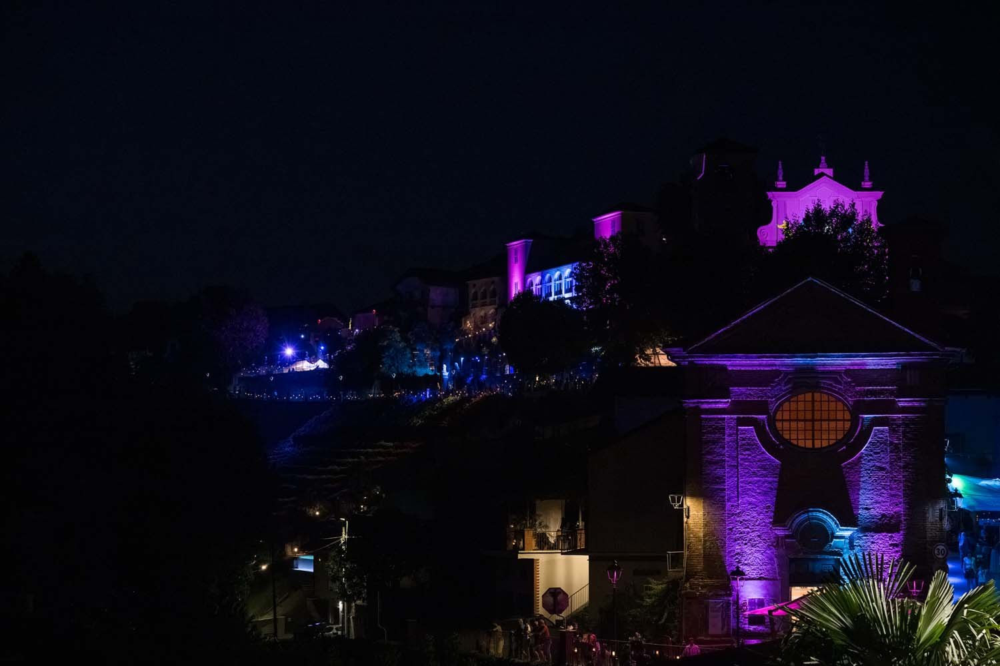
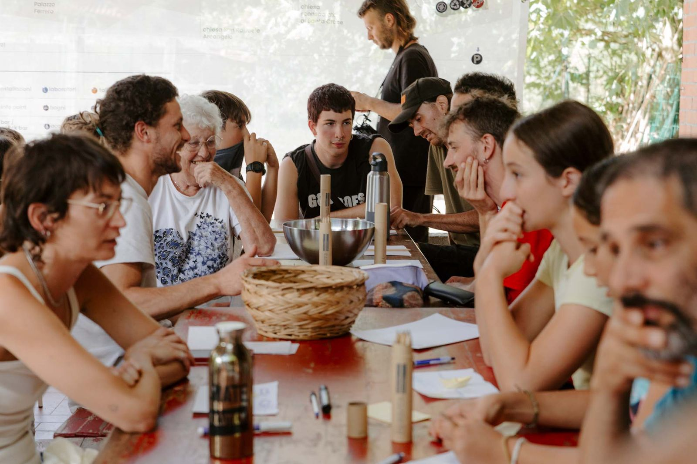
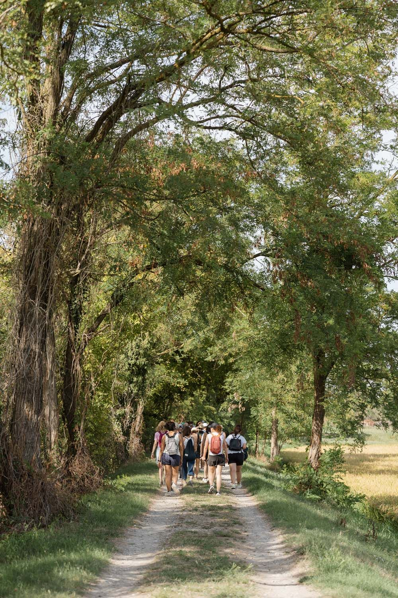
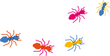
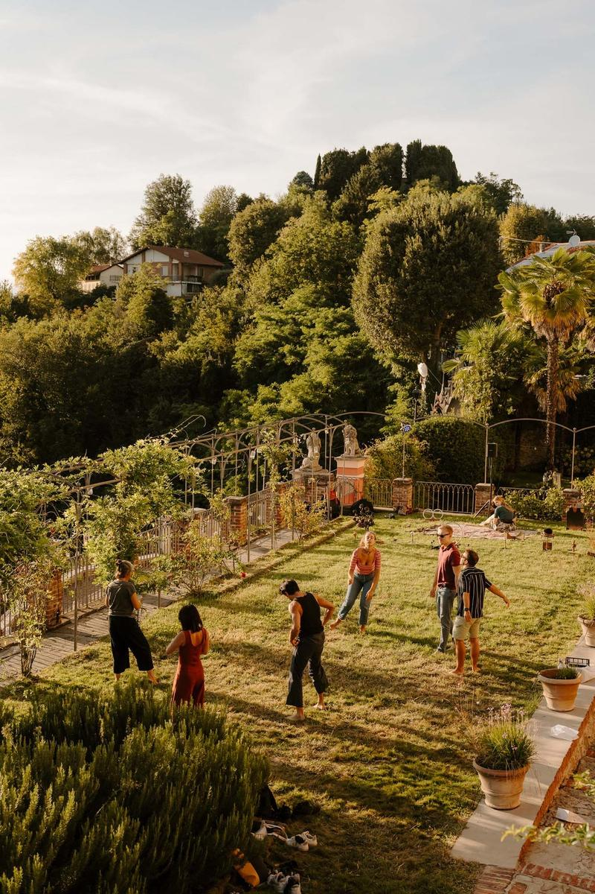
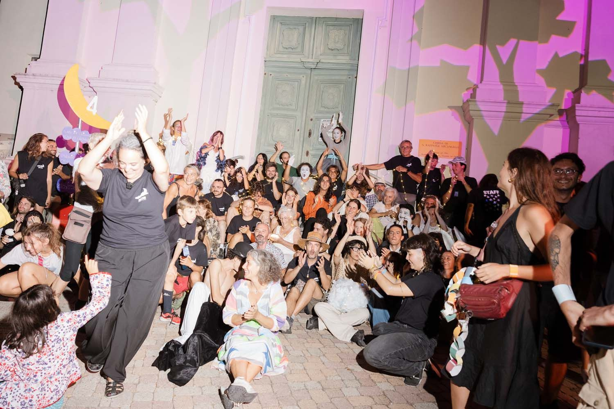

Ingresso libero · sesta edizione
Moon Festival 2027

© Ilum collettivo · Moon Festival, 5ª edizioneIl festival
Un borgo. Un altro mondo.
Per tre giorni il borgo cambia volto. Migliaia di candele accendono vicoli, piazze e cortili, e quello che vedi comincia a somigliare a quello che immagini.
Entra nel Moon
© [AUTORE, EDIZIONE] · Moon Festival
Moon Lab 2027
Cercasi persone per costruire la Luna.
Una residenza gratuita per chi ha tra i 18 e i 35 anni, dal 27 agosto al 7 settembre 2027. Formazione, convivenza e lavoro condiviso per costruire il festival da dentro. Non serve saper guidare un’astronave.
Scopri il Moon LabLa prossima orbita
2027
La prossima edizione
6
Sesta edizione
3–5
Settembre · festival
0 €
Ingresso libero

© Ilum collettivo · Moon Festival, 5ª edizioneMoon Walk
Il viaggio fa parte del festival.
Camminate collettive che attraversano il paesaggio tra la collina e il Po e accompagnano le persone fino al festival. Perché al Moon si arriva anche a piedi.
Scopri la Moon WalkPartecipa tutto l’anno
Anche tu fai il Moon.


© Martino Zattarin · Moon Festival, 4ª edizioneSostenibilità
La bellezza non si butta.
Al Moon i materiali di recupero diventano scenografie, installazioni e allestimenti: oltre 1.500 kg nel 2026. Il festival dura pochi giorni. Il territorio resta.
Le nostre pratiche
© [AUTORE, EDIZIONE] · Moon FestivalArchivio · 2026
ATTIDICURA
Ritrova le persone, gli spettacoli e le domande della quinta edizione.
Iscriviti alla newsletter di Dnart APS per ricevere aggiornamenti, call e opportunità di partecipazione.